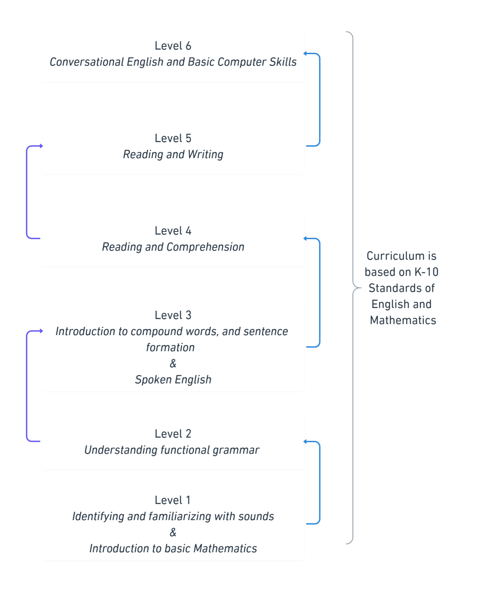

Village Education Initiative
Bridging the gap between education privilege and accessibility
The Challenge
Language Barrier
A survey revealed that out of 100 children aged 10-18 in the target village, the majority have little to no basic English communication skills, severely limiting their future opportunities.
Educational Access
Quality education remains a challenge between right and privilege, with most underprivileged students lacking access to fundamental learning resources.
Technology Gap
The village lacks technological infrastructure, creating significant barriers to implementing modern educational solutions.
Our Innovative Approach

Non-Traditional Learning Center
Rather than establishing a conventional school, we're creating a specialized educational institution focused on:
- English language acquisition
- Practical mathematics
- Spoken communication skills
Our program features 6 competency-based levels instead of traditional grade classes, allowing students to progress at their own pace.
Technology Integration
We're evaluating the most appropriate technological solutions for the village environment:
Each option is being carefully assessed for sustainability, cost-effectiveness, and educational impact.
Current Progress
Learning Management System
Currently evaluating Salesforce CRM and Dash LMS platforms to manage student progress and curriculum delivery.
Community Engagement
Building relationships with village leaders and families to ensure cultural appropriateness and community buy-in.